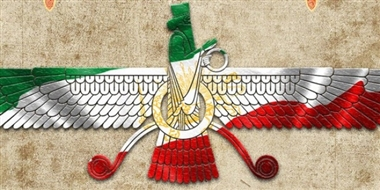
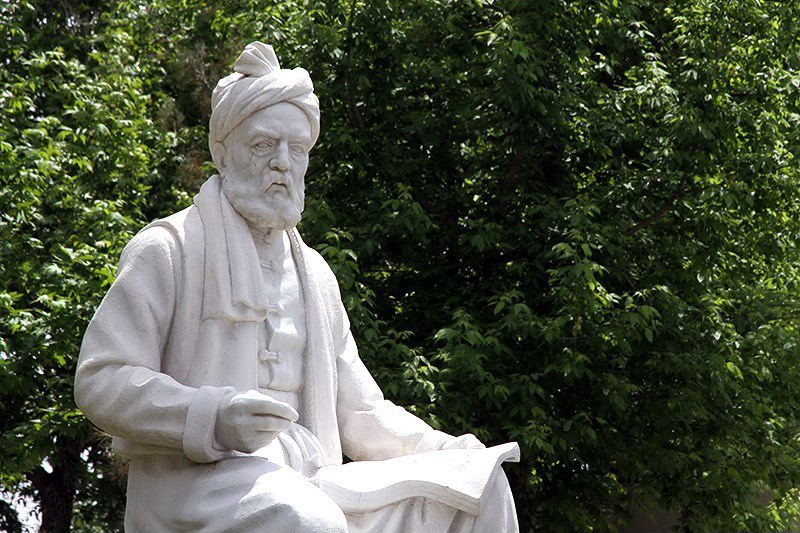
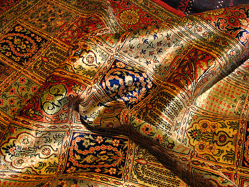
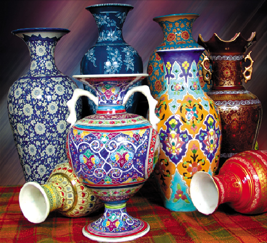
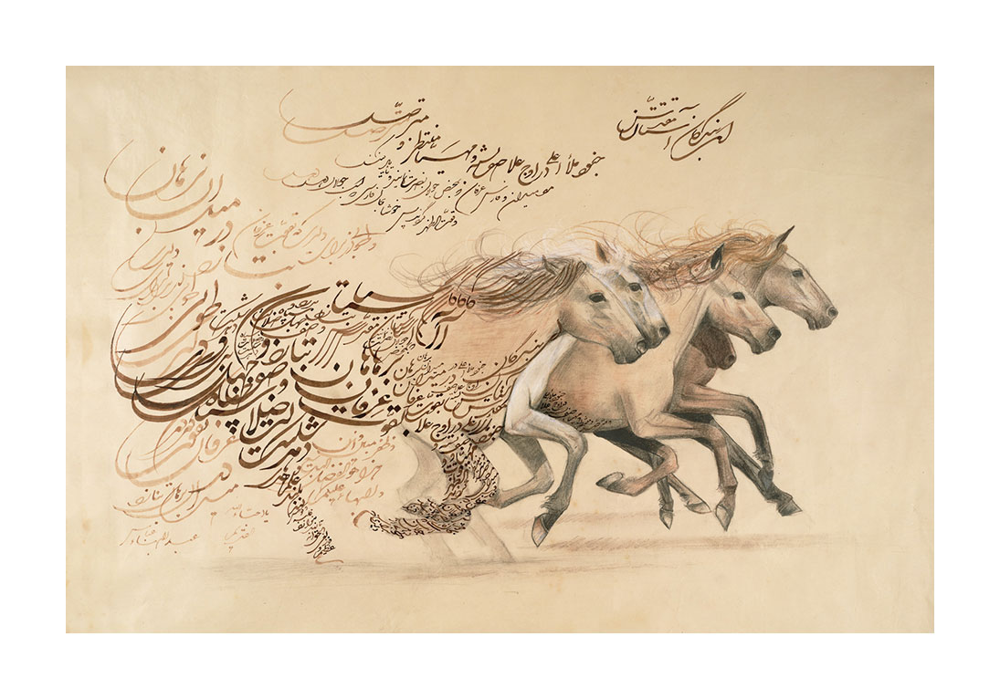
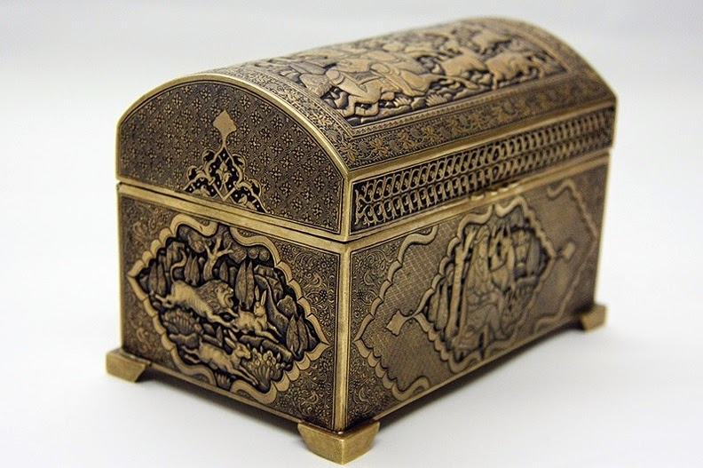
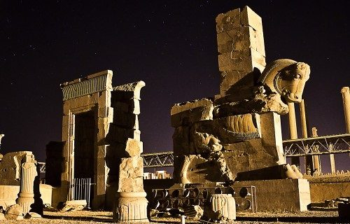
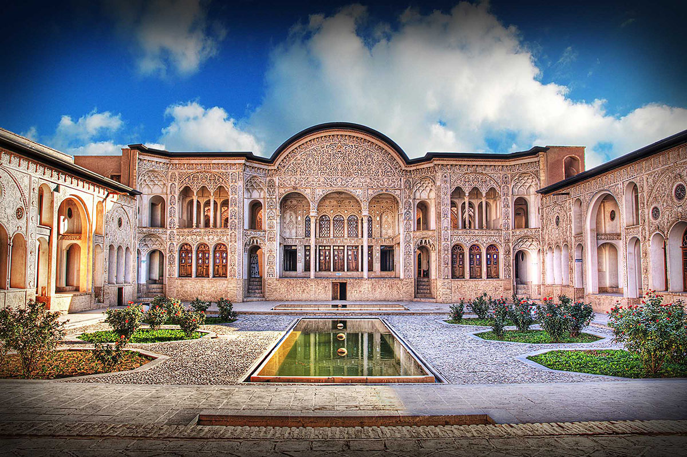
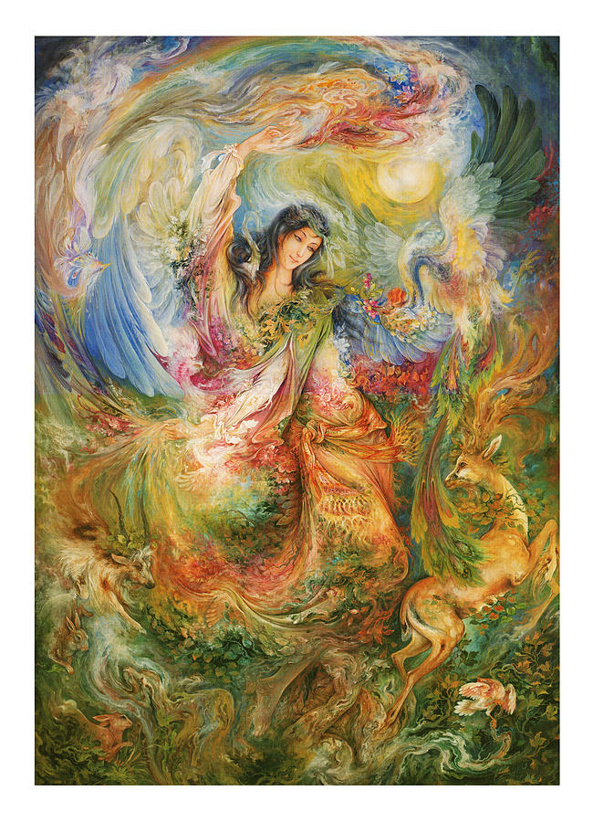
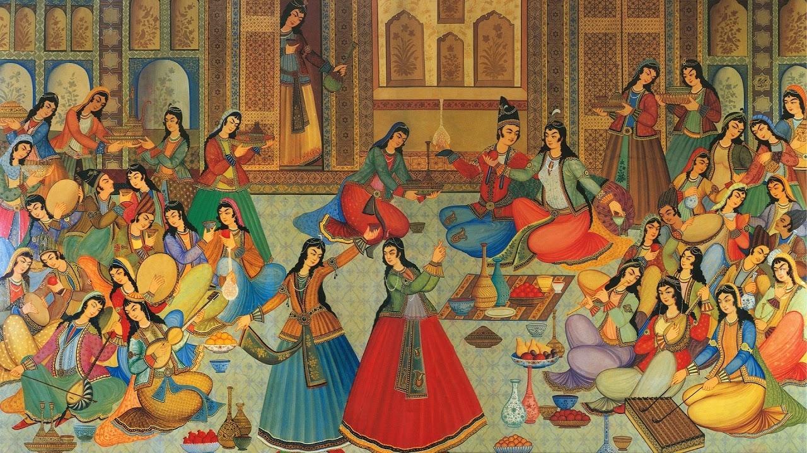

Arts of Iran

The arts of Iran are one of the richest art heritages in world history and encompasses many traditional disciplines including architecture, painting, literature, music, weaving, pottery, calligraphy, metalworking and stonemasonry. There is also a very vibrant Iranian modern and contemporary art scene, as well as cinema and photography.








